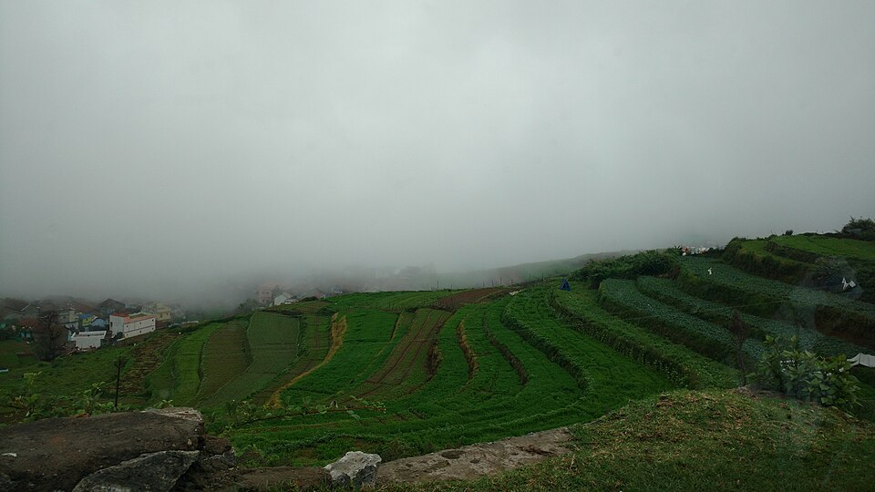
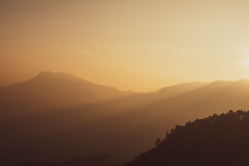

Poombarai Village — Kodaikanal's Offbeat Sunrise Secret
"A terraced garlic-farming village where sunrises arrive in utter silence."



Why Visit
Poombarai is Kodaikanal's best-kept sunrise secret. This remote hill village, famed for its garlic terraces, sits perched at the edge of a dramatic valley with views that rival any official viewpoint in the region. There are no ticket counters, no souvenir stalls, no crowds — just the pre-dawn silence of a farming village, the gradual glow of the horizon, and layers of misty valley stretching to the plains. If you're a photographer or someone who simply wants to escape the tourist circuit and experience a genuinely local Kodai morning, Poombarai is unmissable.
Sunrise here occurs between 6:10–6:40 AM. Arrive by 5:45 AM to find your spot on the terraced hillside before the light changes. The first pink and gold tones appear on the horizon from around 5:55 AM. The village comes alive gently as the sun rises — farmers heading to fields in the half-light adds to the atmosphere.
Easy. You drive to the village (or take a shared jeep) and walk a short distance to the viewpoint on the terrace edges. The terrain is gentle. Suitable for families, elderly travellers, and anyone who wants an offbeat sunrise without physical exertion. Roads leading to Poombarai are winding but manageable.
Drive 25 km from Kodaikanal town via Kookal Road (direction: Mannavanur). The road is scenic and winding. Shared jeeps from the bus stand go to Poombarai — depart early enough to arrive before sunrise. Self-driving is the most flexible option. Hire a local taxi the night before and arrange a 5 AM pickup from your resort.
The stepped garlic terraces in the foreground with the valley dropping beyond them create a stunning compositional layer for photographers. Golden hour here is extraordinary — warm light raking across the terraces while mist fills the valley below. Bring a wide-angle lens and a tripod.